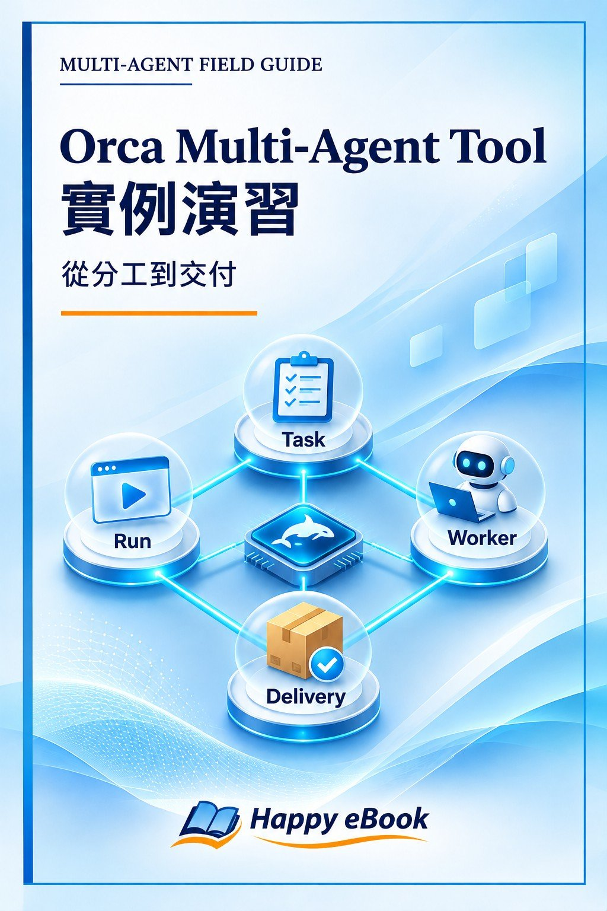

電子書
Orca Multi-Agent Tool 實例演習
從分工到交付

AI 學習 / AI Coding
Orca Multi-Agent Tool 實例演習
從分工到交付
想讓多個 AI 程式代理協作，又不想把程式碼與決策交給黑箱？本書以 Orca CLI 為主軸，帶你從規劃任務、劃分責任，到檢查程式與決定是否交付。 全書以小店結帳專案貫穿六章，逐步介紹 Run、Task、Dispatch、Worker、worktree、訊息協調與 Decision Gate。你會練習如何平行處理互不重疊的程式修改、核對提交與測試證據、回覆 Worker 的問題，以及在阻塞或中斷時保留成果並安全重試。最後再由獨立 QA 核對候選版本，並由人做出交付決策。 本書包含 Orca CLI 操作範例、Python 輔助程式、測試與練習題，並強調幾個實務原則：測試通過不等於程式已獲接受、Worker 回報完成不等於已核准、Task 依賴也不保證 worktree 已包含前置提交。 適合熟悉終端機與 Git，想以可追溯、可驗收方式協調 AI 程式代理的開發者。